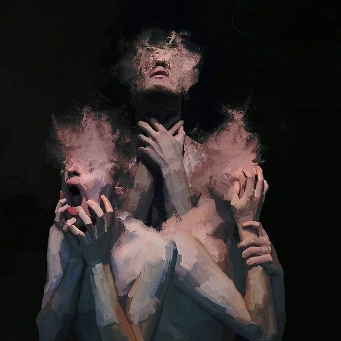
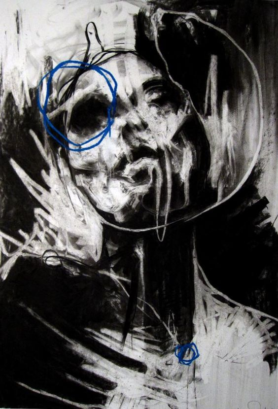
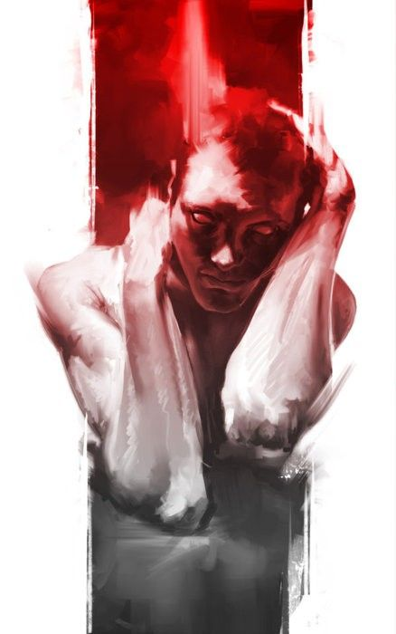
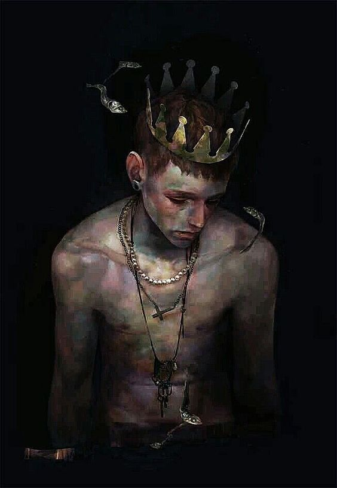
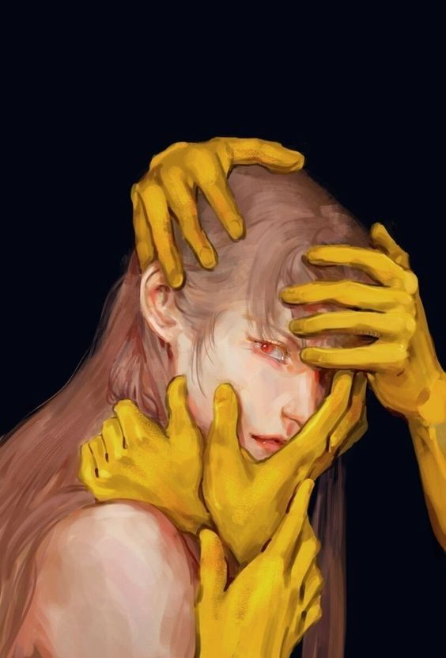
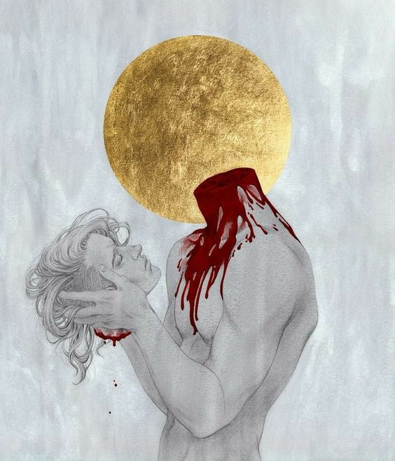

A arte, em sua essência, é uma linguagem universal que transcende barreiras culturais, linguísticas e temporais. Ela é a manifestação mais pura das emoções humanas, um reflexo da nossa alma, capaz de capturar e expressar sentimentos complexos de uma forma que palavras muitas vezes não conseguem.
Além de expressar emoções individuais, a arte também tem o poder de capturar o espírito de uma época, refletindo os sentimentos coletivos de uma sociedade. Obras de arte históricas nos mostram como as emoções e as experiências humanas são atemporais, conectando-nos com gerações passadas e futuras.






Para o observador, a arte também é uma experiência emocional. Uma obra de arte pode evocar uma gama vasta de sentimentos, desde alegria e serenidade até tristeza e contemplação. A beleza da arte está na sua capacidade de ressoar de maneira única com cada indivíduo.